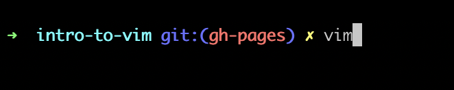
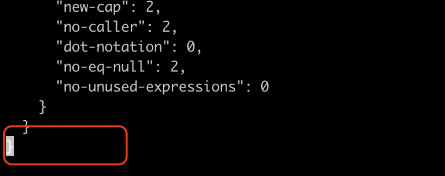
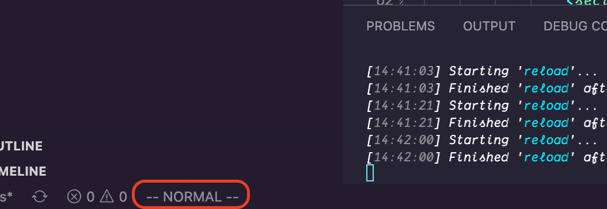
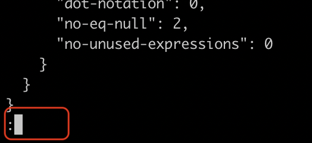
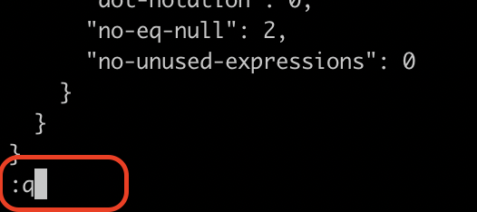
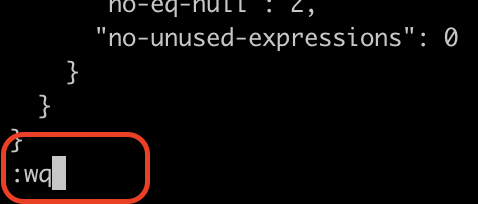
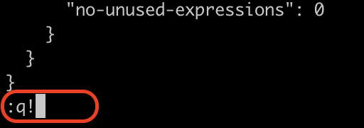

Vim is Awesome!
(don't use Vim 🎉)
Asa Smith
Yahoo!
🐦 @asa_smithasasmith
What is Vim?
Vim is a highly configurable text editor built to make creating and changing any kind of text very efficient. It is included as "vi" with most UNIX systems and with Apple OS X.
vim.orgIt's features include:
- persistent, multi-level undo tree
- extensive plugin system
- support for hundreds of programming languages and file formats
- powerful search and replace
- integrates with many tools
Vim is terminal based editor
Why use vim?
Efficiency
All file navigation controls happen using the keyboard
Most controls originate from the keyboard home keys/row
Never use your mouse again
Vim is (basically) everywhere
Available with most UNIX systems and with Apple OS X
Easily edit dot files from the terminal
or...
Edit files live on a server using an SSH connection
(not recommended)
Last but not least
You can silently judge anyone who isn't using Vim
Especially Emacs users
Vim sounds amazing! Why isn't everyone using it?
"Highly customizable" === A lot of configuration
Fortunately, you have options to use Vim without using Vim
Whichever course you take, Vim can still pose some unique challenges...
How to exit Vim
First, make sure you're in Normal mode
Press ESC once
More on modes later.
Normal mode in iterm
Normal mode in VS Code 
Enter Command mode
Press : (colon) once.
More on modes later, I promise
Command mode Iterm
Command mode VS Code

If no changes made to file
:q
q === quit
If you've made changes to the file
:wq
wq === write and quit
I don't know why I'm here
I don't know what happened
LET ME OUT OF THIS PRISON
:q! // force quit without the write operation
MODES 🎉
Thanks for your patience
Normal mode
Moving the cursor
- h move one character left
- j move one row down
- k move one row up
- l move one character right
That doesn't sound efficient at all
And might have disatrous effects...

reminder, please follow me on twitter 🐦
@asa_smithBut composability...
- 5h moves the cursor 5 chars to the left
- 10j moves the cursor 10 rows down
There's also word movements
- w move to beginning of next word
- b move to beginning of the previous word
- e move to end of word
- W move to beginning of next word after a whitespace
- B move to beginning of previous word before a whitespace
- E move to end of word before a whitespace
These are composable as well
5w move to the beginning of the 5th word
Some other useful navigation items
- 0 move to the beginning of the line
- $ move to the end of the line
- % move to opening/closing bracket/parens depending on where the cursor is located
- gg move to top of file
- GG move to bottom of file
- zz center current row vertically in window
- . repeat last operation
Insert mode
Basic Commands
- i for insert, this immediately switches vim to insert mode
- a for append, this moves the cursor after the current character and enters insert mode
- o inserts a new line below the current line and enters insert mode on the new line
- I moves the cursor to the beginning of the line and enters insert mode
- A moves the cursor to the end of the line and enters insert mode
- O inserts a new line above the current one
To leave Insert mode and return to Normal mode
Press ESC
A lot of people map ESC to caps lock to make this easier
Command mode
Reminder, press : to enter command mode
More complex commands can be executed in command mode
Like search and replace
:%s/foo/bar/g
:%s/foo/bar/g
- : Enters command mode
- % Search across all lines
- s Substitute
- foo Regex to find items to replace
- bar Regex to replace found items with
- g Global, update all occurences in this file
Resources
vim.org vim.fandom.com/wiki/Vim_Tips_Wiki Collection of articles from freecodecamp.comand if you really want to make your life difficult...
Spacemacs
The best editor is neither Emacs nor Vim, it's Emacs and Vim!
spacemacs.org/